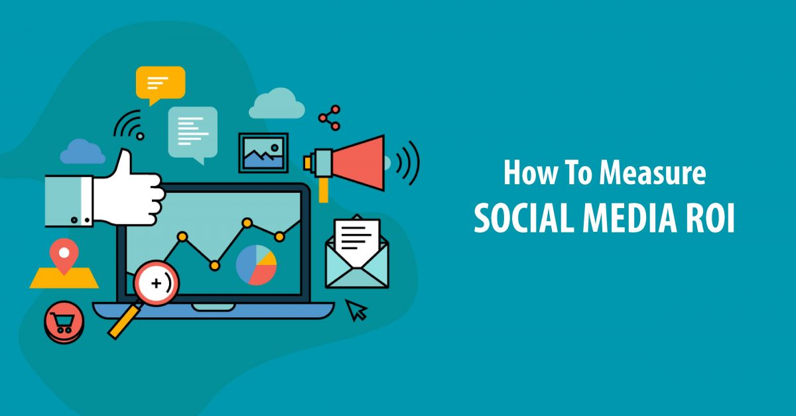

ROI stands for “return on investment.” Social media ROI represents the return on investment from your social media activities.
Return on investment (ROI) is a financial ratio used to calculate the benefit an investor will receive in relation to their investment cost.
It is most commonly measured as net income divided by the original capital cost of the investment. The higher the ratio, the greater the benefit earned
.here are several versions of the ROI formula.
Return on Investment (ROI) is a popular profitability metric used to evaluate how well an investment has performed.
ROI is expressed as a percentage and is calculated by dividing an investment's net profit (or loss) by its initial cost or outlay.
ROI can be used to make apples-to-apples comparisons and rank investments in different projects or assets.
ROI does not take into account the holding period or passage of time, and so it can miss opportunity costs of investing elsewhere.The two most commonly used are shown below:
ROI = Net Income / Cost of Investment
.jpg)
.png)